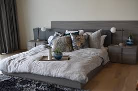

I do not like to wake up early but I don't like to go to bed early either so I usually stay in my room most of the time. Fuzzy socks are one of my favorite things ever because they keep me warm and I just love everything about them. I also really love Netflix. I am definitely a binge watcher so that's not always good but I usually watch Netflix after I am done my homework.